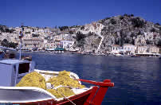

Συμη
(SYMI)
Symi has a prosperous past,
but it lost its sparkle with the Second World War. Even so,
its tradition character still brings in hordes of tourists.
 |
The picturesque port of Gialos is one
of the most beautiful in Greece. There is plenty of hustle
and bustle due to the numerous taverns and stalls
offering local specialities. |
|


 |
You can get to the
higher reaches of town from the port by braving the 375
marble steps, which will lead you right into the heart of
a real maze.
The Symi museum at the peak of the island
is home to a considerable collection of traditional costumes and
objects. It is also the ideal vantage
point for admiring the old medieval wall.
Make sure that you do not miss
out on the Agios Georgios and Megali Panagia churches. |
|
 |
Another unique feature of the island lies
in its architecture,
which marks a contrast between the bygone era and
the revival. The bay is also lined here and
there with neoclassical houses, some of which have
been restored with brilliant colours and others simply left
in ruins. |
|
 |
On the other side of the island, the
Panormitis monastery is home to some magnificent
frescos, including one of Archangel Michael and his armour.
Its bells ring out to bid a friendly welcome to
any arriving boats. You can also check out its museum,
which houses a collection of the old equipment
formerly used for sponge diving. |
|
We did not have
the time to visit the rest of the island, but you can reserve a
room if you wish to stay overnight.